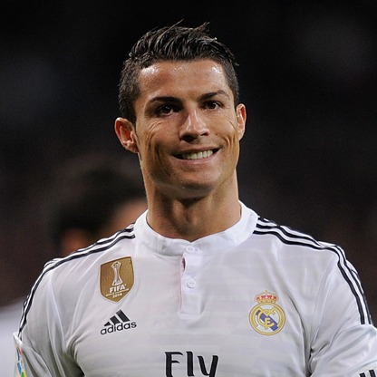
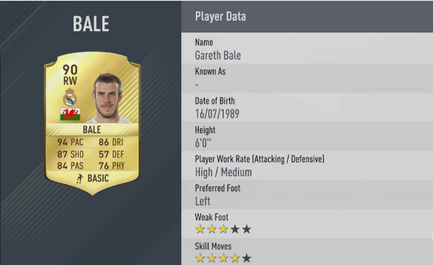
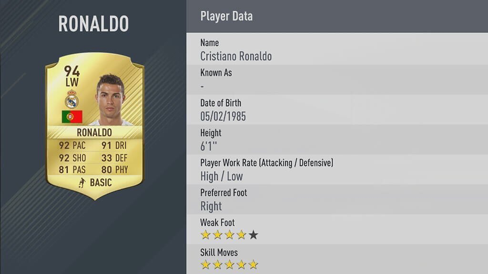

a breif history of real madrid
home to the great Portugese player Christiano Ronaldo, the great Welsh player Gareth Bale and the great French player Karim Benzema. it is arguably the world's best club, and arguably a club in it's brightest hour with an incredibly strong attacking force and a legendry array of midfielders.
real madrid, like many clubs has three kits. this year, they still keep the white kit, as their legendary home kit. the away kit is a thrilling purple, and the third kits is defiant black on light grey.
As I mentioned earlier, real madrid is a club with a vivid history and at that, one with alot of sucess, but also with dark times.Real Madrid's origins go back to when football was introduced to Madrid by the academics and students of the Institución Libre de Enseñanza, which included several Cambridge and Oxford University graduates. They founded Football Club Sky in 1897, playing on Sunday mornings at Moncloa. It split into two clubs in 1900: New Foot-Ball de Madrid and Madrid Football Club.On 6 March 1902, after a new Board presided by Juan Padrós had been elected, Madrid Football Club was officially founded. Three years after its foundation, in 1905, Madrid FC won its first title after defeating Athletic Bilbao in the Spanish Cup final.
In 1929, the first Spanish football league was founded. Real Madrid led the first league season until the last match, a loss to Athletic Bilbao, meant they finished runners-up to Barcelona. Real Madrid won its first League title in the 1931–32 season. Real won the League again the following year, becoming the first team to have won the championship twice.
On 14 April 1931, the arrival of the Second Spanish Republic caused the club to lose the title Real and went back to being named Madrid Football Club. Football continued during the Second World War, and on 13 June 1943 Madrid beat Barcelona 11–1 in the second leg of a semi-final of the Copa del Generalísimo, the Copa del Rey having been renamed in honour of General Franco. It has been suggested that Barcelona players were intimidated by police, including by the director of state security who "allegedly told the team that some of them were only playing because of the regime's generosity in permitting them to remain in the country." The Barcelona chairman, Enric Piñeyro, was assaulted by Madrid fans.
On 25 June 2013, Carlo Ancelotti succeeded Mourinho to become the manager of Real Madrid on a three-year deal, A day later, he was introduced at his first press conference for Madrid where it was announced that both Zinedine Zidane and Paul Clement will be his assistants. On 1 September 2013, the long-awaited transfer from Tottenham of Gareth Bale was announced.
the name real madrid, in spanish spanish directly translates into Real Madrid Club de Fútbol, but if you cannot translate that into Royal madrid football club, then I have done it for you. why royal, because the word Real is Spanish for Royal and was bestowed to the club by King Alfonso XIII in 1920 together with the royal crown in the emblem.
strength ratings
attackers: strong
midfielders: medium
defenders: medium-weak
the latest must have team for real madrid fans is FIFA 17, another game from EA SPORTS.
 